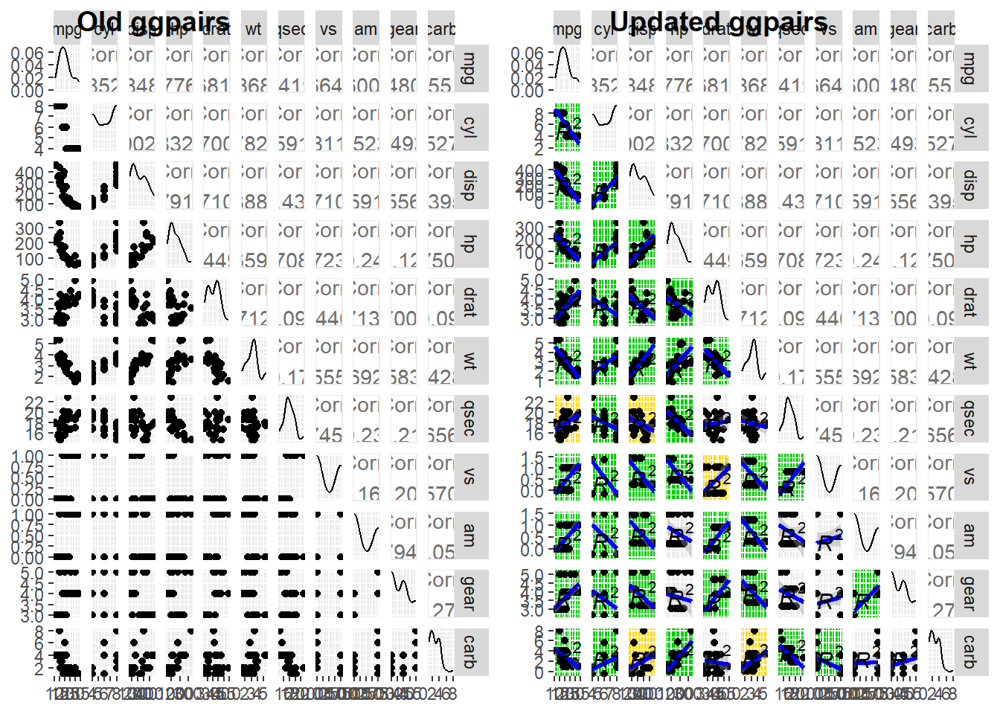
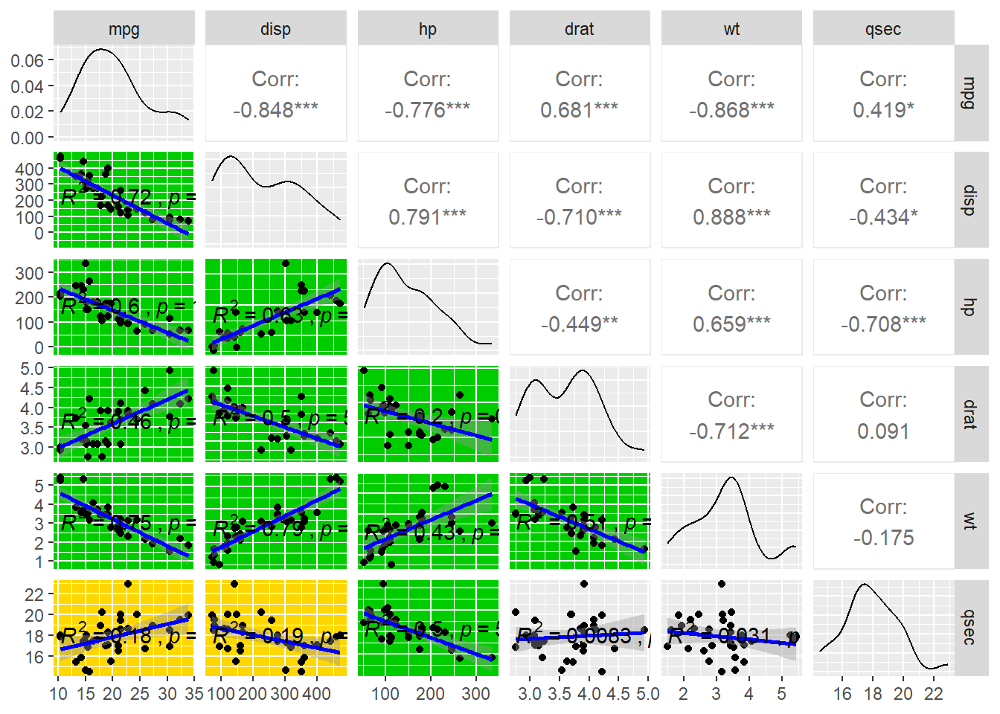

(update text) The following page provides examples for various coding and quantitative techniques I’ve used over the years that may be useful to others. This page is a work in progress. I will be adding more vignettes when available!
leafletI do a lot of mapping in R and have been using the
leaflet package for a few years. Unlike static maps in
ggplot2, these allow users to pan, zoom, and even click on
map objects for more information. On one hand, the code required is a
fairly gross mixture of R and JavaScript, but the package is extremely
flexible and allows for a lot of customization. The following vignettes
demonstrate some of the basic functionality of leaflet in
R.
One of the things that’s nice about leaflet is that it
doesn’t force you to format your dataset specifically for spatial
datasets with sp or sf. You can, but
it isn’t required.
This first example was from a pilot study where we put GoPros down on a spawning reef to try getting footage of spawning Arctic Charr. We recorded camera number (Camera), GPS coordinates (Latitude & Longitude), and the direction the camera was facing (Direction). We also assigned a color to each camera based on whether it was on the reef or off the reef (Color).
The following code creates a simple interactive map with two layers: one for the GoPro cameras and one for some points of interest (POIs) that we identified in the area.
library(leaflet)
# Make a Test Dataset (Alternatively Import From File)
GoPro <- data.frame(Camera = as.character(c(11, 5, 7, 8, 4)),
Latitude = c(44.73664, 44.73625, 44.73646, 44.73488, 44.73513),
Longitude = c(-68.48991,-68.48971,-68.48959,-68.49012,-68.49026),
Direction = c("West", "North", "West", "West", "South"),
Color = c("blue","blue","blue","green","green"))
GoPro_map <-
leaflet(
options = leafletOptions(zoomControl = FALSE) # turns off an annoying box
) %>%
# Add Basemap Layer (see https://leaflet-extras.github.io/leaflet-providers/preview/)
addProviderTiles(providers$Esri.WorldImagery, group = "World Imagery") %>%
# Add Points using GoPro data.frame
addCircleMarkers(
# Define Dataset
data = GoPro,
lng = ~Longitude, # reference the coordinates columns
lat = ~Latitude, # reference the coordinates columns
# Point Aesthetics
color = ~Color, # use column to reference color (could also make color palette function)
stroke = FALSE, # remove border for a cleaner look (at least I think so)
radius = 6, # adjust point size (can also adjust this based on a value)
fillOpacity = 1, # make point opaque not transparent
# Point Labeling
popup = ~paste0("Direction: ", Direction, "<br>", # text displayed when clicking point
Latitude, ", ", Longitude),
label = ~paste0("Direction: ", Direction), # text displayed when hovering over point
group = "GoPros") %>% # layer group (important later)
# Alternatively Add Points Manually
addCircleMarkers(
data= data.frame(
lng = c(-68.49053,-68.49260,
-68.49139,-68.49579,-68.50065),
lat = c( 44.73494, 44.73503,
44.73659, 44.73776, 44.74542),
label = c("Reef", "Potential Staging Area",
"2024 Hotspot", "2024 Hotspot", "2024 Hotspot")
),
lng = ~lng, # reference the coordinates columns
lat = ~lat, # reference the coordinates columns
color = "red", # make all points in group a single color
stroke = FALSE, # remove border for a cleaner look
fillOpacity = 0.5, # make points semi-transparent for fun
popup = ~paste0(label, "<br>", lat, ", ", lng),
label = ~label,
group = "Points of Interest"
)
GoPro_mapPlay around with the map using your mouse and you’ll notice a few things:
+ and -
will adjust the zoomSomething that’s also really important about leaflet is
that (just like ggplot) layers are added in the order you
call them, with the exception that basemaps are always on the bottom.
You may notice that the red points of interest are kinda overlapping the
green GoPro points, and eventually the blue points if you zoom out
enough. Sometimes it’s nice to be able to turn off layers or toggle
between them
Notice above that in the code above, each layer added to the map
above has an argument for group, such as
group = GoPros and group = World Imagery. By
using addLayersControl we can add
overlaygroups that turn on/off and baseGroups
that you can cycle between. The layer most recently turned on will be
plotted on top, regardless of order they were coded for the control
box.
GoPro_map %>%
# Add More Basemap Options
addProviderTiles(providers$OpenStreetMap.Mapnik, group = "Street Map") %>%
addProviderTiles(providers$Stadia.AlidadeSmooth, group = "Grayscale") %>%
addLayersControl(overlayGroups = c("GoPros", "Points of Interest"), # toggle these layers on/off
baseGroups = c("World Imagery", "Street Map", "Grayscale"), # switch between these
options = layersControlOptions(collapsed = FALSE))I tend to put basemap layers as baseGroups (this is
probably intended), but theoretically you could assign points or
combinations of both. For example, add black/white points in the group
“Greyscale” to have a potentially publication-friendly
figure.
Look for more basemap layers to find one that suits your needs. Unfortunately, many require an API, so some trial and error may be necessary. I typically use layers from OpenStreetMap, Stadia, Esri, and USGS. Also be warned that sometimes layers will not zoom in as far.
Sometimes you might want to add some tools to make life easier for
checking distances between points or simply drawing another (temporary)
point or polygon. Here’s how to add further functionality to maps using
leafem and leaflet.extras
library(leafem) # addMouseCoordinates()
library(leaflet.extras) # addDrawToolbar(), addMeasurePathToolbar(), addStyleEditor()
GoPro_map %>%
# Display Lat & Long of Mouse Cursor and Zoom Level (0 is world view; these basemaps max out ~17-20)
addMouseCoordinates() %>%
# Simple Measuring Tool With a Lot of Customization (defaults to top right)
addMeasure() %>% # shows lat/long location (point), length (polyline), and area/perimeter (polygon)
# change length units: primaryLengthUnit/secondaryLengthUnit = "feet"/"miles
# "meters"/"kilometers"
# change area units: primaryAreaUnit/secondaryAreaUnit = "acres"/"hectares"
# "sqmeters"/"sqmiles"
# admittedly the default color schemes are awful
# change with completedColor/activeColor = "#000000" (use hex colors notation)
# A More Complicated Drawing Toolset (the argument inside lets you edit vertices and delete objects)
addDrawToolbar(editOptions=editToolbarOptions(selectedPathOptions=selectedPathOptions())) %>%
# Symbols are for polylines, polygons, squares, circles, markers, and points
# Display Measurements of All Drawn Features (works for both drawing toolsets; defaults to left side)
enableMeasurePath() %>% # allows the display to work (default is meters)
addMeasurePathToolbar() %>% # toggle on/off with beaker symbol; refresh after eding vertices
# Manually Adjust Any Map Feature (plotted data or drawn line)
addStyleEditor() %>% # Allows changes in point/line/polygons:
# outline - color/opacity/thickness/dashes,
# fill - color/opacity, and label text (if clicked)
# this breaks markers (blue pins)
# Add Search Bar for Specific Text in Popups (doesn't work on draw shapes/points)
addSearchFeatures(targetGroups = c("GoPros", "Points of Interest")) # must define groups to searchPlay around with some of these new tools! They typically default to
the left side of the map (except addMeasure()), and are
added top to bottom in order you add them in the code.The location of
the toolbars for addLayersControl(),
addMeasure(), addDrawToolbar() and
addStyleEditor() can be adjusted using arguments like
position = "topleft" or
position = "bottomright", though I have yet to figure out
the syntax for addMeasurePathToolbar() and
addSearchFeatures()
Sometimes when sending code to collaborators (or myself on a different computer), it’s important to make sure that all the packages you use are loaded. Though RStudio is pretty good about letting you know which aren’t loaded, it’s still easier to just write code to install and load packages rather than relying on the recipient to notice they don’t have something!
This code checks for the packages you need from the list you provide,
installs any that are missing, and loads them all to the work space. The
packages used in this example were for the leaflet demos
above.
I use variations of this code snippet in nearly every R script I write.
Original
install.packages("tidyverse")
install.packages("viridis")
install.packages("knitr")
install.packages("leaflet")
install.packages("leafem")
install.packages("leaflet.extras")
library(tidyverse)
library(viridis)
library(knitr)
library(leaflet)
library(leafem)
library(leaflet.extras)New
{ # define necessary packages
list.of.packages <- c("tidyverse", "viridis", "knitr", "leaflet", "leafem", "leaflet.extras")
# compare necessary vs installed packages
new.packages <- list.of.packages[!(list.of.packages %in% installed.packages()[,"Package"])]
if(length(new.packages)) install.packages(new.packages) # install any new pkgs
lapply(list.of.packages, library, character.only = TRUE) # load pkgs
rm(list.of.packages, new.packages) # remove extra objects
# sessionInfo() # option to check which packages are actually installed
}I often run code that takes a long time to complete, so I wrote this
function to calculate the runtime of any code you put inside it.
Honestly it’s a bit over-engineered, but this wrapper function was
really helpful when I ran models that took anywhere from 20 minutes to
three days to complete. Just wrap your code in the
runtime() function and it will return a message with the
total time elapsed.
runtime <- function(x){
start <- Sys.time()
x
ifelse(difftime(Sys.time(), start) < as.difftime(minutes(1)),
paste0("Function ran for ", round(difftime(Sys.time(),start, units = "secs"),3),
" seconds; Ending ", format(Sys.time(), format = "%B %d, %Y %H:%M:%S")),
ifelse(difftime(Sys.time(),start) < as.difftime(hours(2)),
paste0("Function ran for ", round(difftime(Sys.time(),start, units = "mins"),2),
" minutes; Ending ", format(Sys.time(), format = "%B %d, %Y %H:%M:%S")),
paste0("Function ran for ", round(difftime(Sys.time(),start, units = "hours"),2),
" hours; Ending ", format(Sys.time(), format = "%B %d, %Y %H:%M:%S"))
))
}For example:
## [1] "Function ran for 2.032 seconds; Ending August 30, 2026 22:33:41"GGally::ggpairs()I recently had to make a large set of pairwise plots of environmental covariates for a manuscript and ran into the problem of having too many plots to easily view them all. Secondly, I wanted to be able to quickly identify which plots had significant correlations.
I wrote this function in two parts: the first part updates
GGally::ggpairs plots with customized lower panels to
include correlation coefficients, p-values, is color coded. The second
part allows you to subset these plots so a reasonable number can be
viewed at a time.
library(GGally) # Yes, I realize that I'm not loading these using my fancy code above
library(ggpubr)
ggpairs_updated <- function(covars){
GGally::ggpairs(covars, lower = list(continuous = function(data, mapping, method="lm", ...){
p <- ggplot(data = data, mapping = mapping) +
geom_point() +
geom_smooth(method=method,colour="blue", ...)+
ggpubr::stat_cor(aes(label=paste(..rr.label.., ..p.label.., sep = "~`,`~")),
method="pearson", label.y.npc = "center")
x <- eval_data_col(data, mapping$x)
y <- eval_data_col(data, mapping$y)
# Calculate correlation and p-value
test_res <- cor.test(x, y, use = "complete.obs")
p_val <- test_res$p.value
r_val <- test_res$estimate
# Determine color based on p-value (e.g., p < 0.01 is green, p < 0.05 is yellow, otherwise grey)
# You can customize these colors and thresholds
if (p_val < 0.01) {
border_col <- "green3"
border_lw <- 3
bg_col <- "green3"
} else if (p_val < 0.05) {
border_col <- "gold"
border_lw <- 2
bg_col <- "gold"
} else {
border_col <- "grey92"
border_lw <- 1.5
bg_col <- "grey92"
}
p <- p + theme(#panel.border = element_rect(fill = NA, color = border_col, linewidth = border_lw),
panel.background = element_rect(fill = bg_col, color = NA))
return(p)
}
))
}Example using the entire mtcars dataset

Again, this second part takes the output from
ggpairs_updated() and allows you to subset the plots by row
and column. This is useful when you have a large number of variables and
want to view only a few at a time.
ggpairs_subset <- function (ggpairs_output, selected_rows = NULL, selected_cols = NULL){
plot_list = list()
if (is.null(selected_rows)){selected_rows <- 1:ggpairs_output$nrow}
if (is.null(selected_cols)){selected_cols <- 1:ggpairs_output$ncol}
for (i in seq_along(selected_rows)) {
for (j in seq_along(selected_cols)) {
# Extract the specific panel using getPlot
p <- getPlot(ggpairs_output, i = selected_rows[i], j = selected_cols[j])
# Store in list
plot_list <- append(plot_list, list(p))
}
}
output <- ggmatrix(
plots = plot_list,
nrow = length(selected_rows),
ncol = length(selected_cols),
xAxisLabels = ggpairs_output$xAxisLabels[selected_cols],
yAxisLabels = ggpairs_output$yAxisLabels[selected_rows]
)
return(output)
# rm(plot_list, selected_rows, selected_cols, p, plot_list, i, j, output)
}Subset mtcars to only show specific rows & columns;
these don’t need to be the same rows and columns

Some potential additions include:
leaflet point markers using Awesome
MarkersRMarkCompiled in R with RMarkdown and Github Pages.
Copyright © Greg Kronisch.